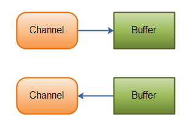

Java NIO (1) 基本概念
Java 1.4之后引入了NIO框架。
Java NIO: Channels and Buffers（通道和缓冲区）
标准的IO是在字节流和字符流进行操作。NIO 是在通道（Channel）和缓冲区（Buffer）进行操作。数据总是从通道读取到缓冲区里，或者从缓冲区写入到通道里。
Java NIO: Asynchronous IO（异步IO）
NIO可以做异步IO，例如：当线程从通道读取数据到缓冲区时，线程还是可以进行其他事情。当数据被写入到缓冲区时，线程可以继续处理它。从缓冲区写入通道也类似。
Java NIO: Selectors（选择器）
Java NIO包含了选择器的概念。选择器用于监听多个通道的事件（比如：连接打开，数据达到）。因此，单个的线程可以监听多个数据通道。
所以 Java NIO 核心组件包括：
Channels
Buffers
Selectors
除了以上列出来的，还有一些其他的组件，比如Pipe 、FileLock等组件类 ，这些类在使用的过程中，都会结合上面列出的三个核心组件类来使用。
Channels
NIO里的 Channel 类似一个IO流， 数据通过Buffer可以写到Channel，通过Channel读取数据到Buffer。

Channel 实现类有：
FileChannel —— 读写文件数据
DatagramChannel —— 通过UDP读写网络上的数据
SocketChannel —— 通过TCP读写网络上的数据
ServerSocketChannel —— 监听TCP连接，为每一个新的请求连接创建一个SocketChannel
这些实现覆盖了 UDP + TCP 网络 IO 和文件 IO。
使用FileChannel读文件数据例子：
1 | RandomAccessFile aFile = new RandomAccessFile("data/nio-data.txt", "rw"); |
Buffers
Buffer 实现类有：
ByteBuffer
CharBuffer
DoubleBuffer
FloatBuffer
IntBuffer
LongBuffer
ShortBuffer
这些实现累覆盖了Java基本数据类型：byte, short, int, long, float, double 和 char。我们可以使用不同的Buffer来传递不同类型的数据。
另外还有，MappedByteBuffer 这个实现类，它是ByteBuffer的子类。具体用法后续给出单独的文章。
Channels和IO流不同点：支持读和写、支持异步读写、总是从Buffers读取数据或写入数据到Buffers。
Selectors
一个线程可以通过Selector来管理多个Channel对象。如果你的应用程序打开了多个连接（Channels），处理起来是非常方便的。例如下面的图示，一个线程，处理3个Channel。

使用Selector，需要先把Channel注册到Selector上，然后调用select() 方法，这个方法调用后将阻塞，直到注册到Selector上的Channel有一个事件准备
就绪，例如：一个连接接入或收到了数据等，这时就可以对这个事件进行后续的处理了。